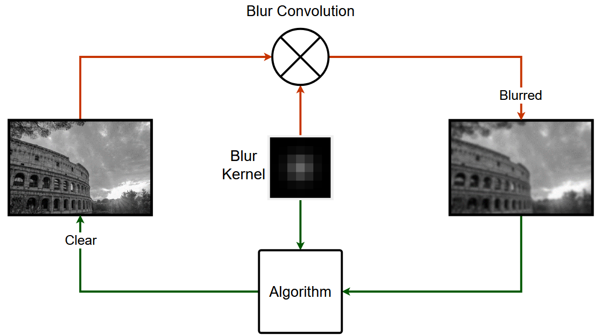
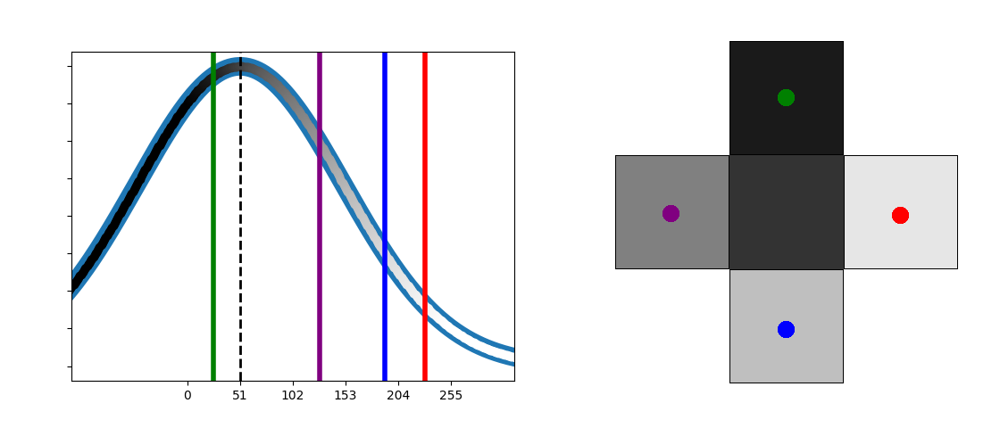
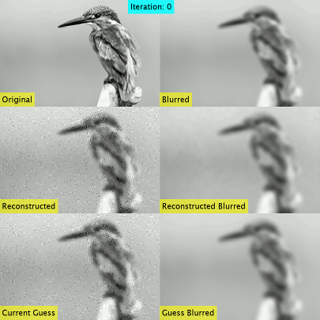
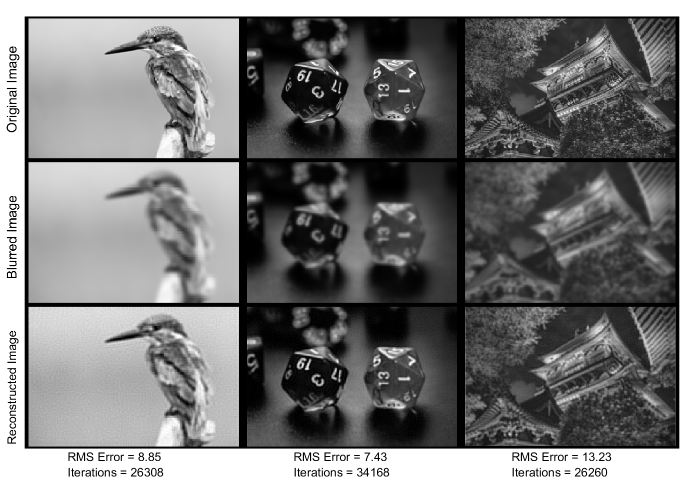
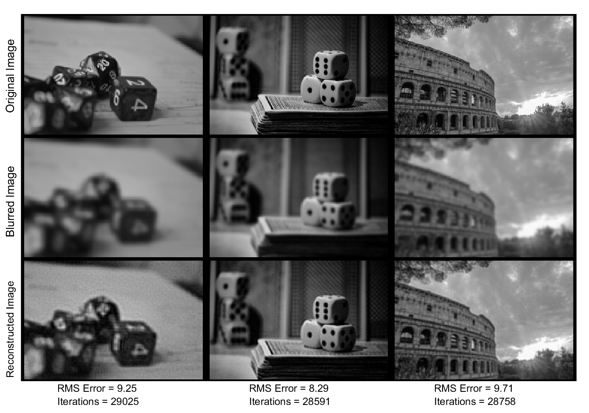

Problem

Figure 1
This project's goal is to unblur an image using Bayesian Statistics and Markov Chain Monte Carlo techniques. Images can be blurred in countless different ways making the situation difficult. The problem is simplified when only considering a known Gaussian blur kernel. The algorithm must effectively deconvolve the blur with the blurred image statistically.
Methods
The algorithm will work by proposing a hypothesized image and comparing it to the previous hypothesized image. This process is actually done for each pixel rather than the whole image at once to help reduce the dimensionality. The way in which the Bayesian posterior is defined will determine how well the algorithm works.
Defining Bayes Theorem
Bayes Theorem can be define as such where Y is a hypothesized reconstructed image, X is the given blurred image, and K is the Gaussian Blur Kernel. Each component is defined in Figure 2

Figure 2
The likelihood term represents the odds that the blurred image can be reproduced by the hypothesized clear image. This can be done by comparing the given blurred image and a blurred version of the hypothesized clear image.

Figure 3
The prior term represents how likely a hypothesized image is given all prior information, regardless of the blurred image. This idea of any given image being "more likely" is bit abstract. A prior could be formulated using large datasets of images. In this case, a simple neighborhood prior is used which enforces the idea that adjacent pixels in images tend to be close in value. For each pixel a Gaussian is constructed where its mean is the current pixel's value. This idea is illustrated in Figure 3. Here, the prior enforces a dependency of pixels on each other. Without this, each pixel would try to optimize itself without any consideration for the larger picture.
Metropolis-Hastings Algorithm
A rough probability can be assigned to a hypothesized image. This probability can also be compared to another hypothesis by a ratio called the Acceptance Ratio. The final step is to search the space of hypothesized images for the best. This will be done using the Metropolis-Hastings MCMC technique. First, a hypotheses is generated by randomly modifying each pixel through the addition of random samples from the normal distribution multiplied by a step size. The Acceptance Ratio of the new hypotheses and the previous is calculated and clamped between 0 and 1. However, if a new hypothesis is better, it is not immediately accepted. It is useful to accept bad hypothesis to avoid getting stuck in a local optimum. A new hypothesis is randomly accepted with odds equal to itself. A 50% Acceptance Ratio is accepted half the time for example. This process repeats until the change in RMS error between images is too small.
Results

Figure 4
The results animation in Figure 4 shows results over many iterations. Pay close attention to the image labeled "reconstructed" as this is the best solution at that iteration. Notice it starts out noisy and then gains some detail back that can't be seen in the blurred image.

Figure 5

Figure 6
The results in Figure 5 and Figure 6 show the original image on the top row, the initial blurred image on the second row, and finally, the reconstructed image on the bottom row. The RMS error is given between the reconstruct and original image as well as the number of iterations required.
| Bird | Two Dice | Pagoda | Dice Rolled | Dice Stacked | Colosseum | |
| RMS Blurred | 13.84 | 14.05 | 18.98 | 14.66 | 13.07 | 13.87 |
| RMS Reconstructed | 8.85 | 7.43 | 13.23 | 9.25 | 8.29 | 9.71 |
| % Improvement | 36% | 47% | 30% | 37% | 37% | 30% |
This table shows the RMS error improvement after reconstruction as a percentage of the given blurred image RMS error. The RMS error is found by comparing to the ground truth image. The results here demonstrate that even this simple algorithm can bring reimagine some detail.